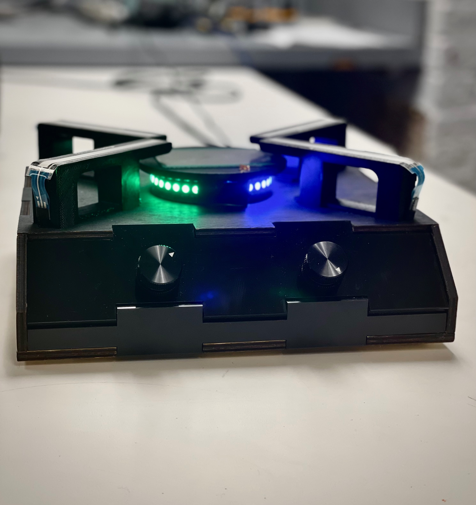

I enjoy making music, hacking, ping-pong, Portuguese, and spontaneous adventures.
I'm touring grad schools for the '25 Ph.D. cycle.
Some projects I've worked on recently
The Cookware: An electronic instrument built and designed for Paul Lehrman's EMID course.

Compost: A language with an affine type system and compiler-time garbage collection. Submitted for Richard Townsend's Compilers course.
An Alternative to Pattern Matching, Inspired by Verse (Senior Honor's Thesis):
A study of how equations within the Verse Calculus subsume pattern matching in traditional functional languages.
My advisors were Norman Ramsey and Milod Kazerounian.
The work received Highest Thesis Honors.
The source code can be found here.
Research Interests
I'm interested in language implementation, compiler writing, formal
verification, and novel methods of data representation.
I've written five languages,
including
three
translators,
a
virtual machine,
and
a number of other projects
in functional and low-level languages.
Non-programming languages
I speak Portuguese, French, and English. I'm learning Mongolian right now
on the Luce!
Fun fact: the gender of a Mongolian word is determined by its vowels.
There are masculine and feminine vowels,
and a word can only contain those belonging to one set or the other
(plus a neutral vowel И).
The set determines the word's gender!
Personal Scoop
I'm enjoying Aubrey Menard's Young Mongols,
Slay the Spire, and The Idiot.
I'm currently playing with the Анир Pop Orchestra in Улаанбаатар.
Home